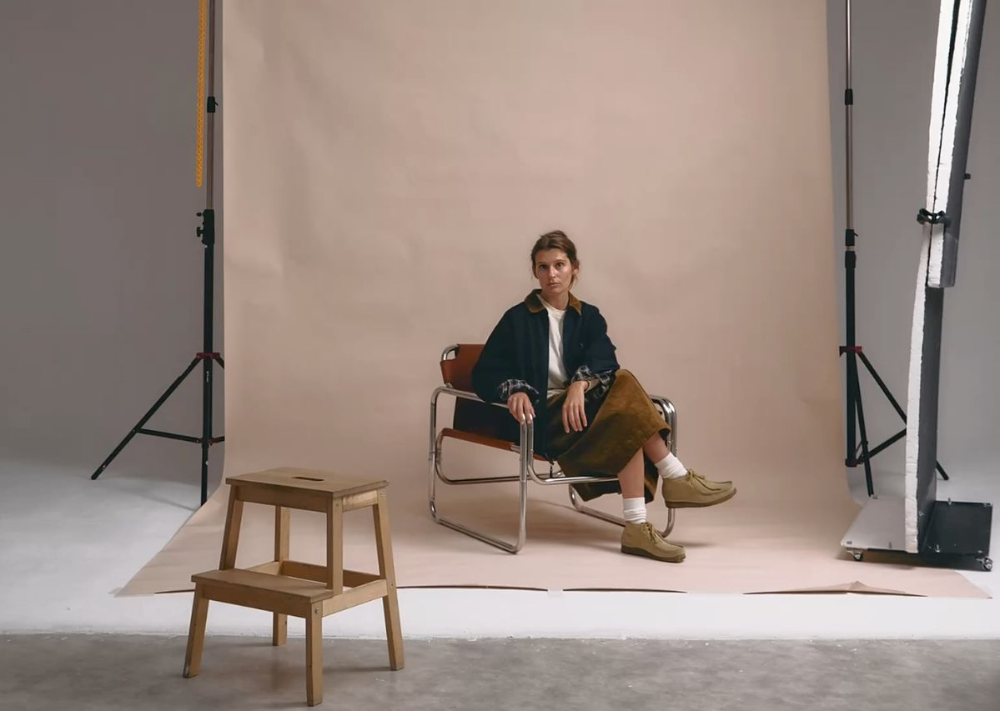
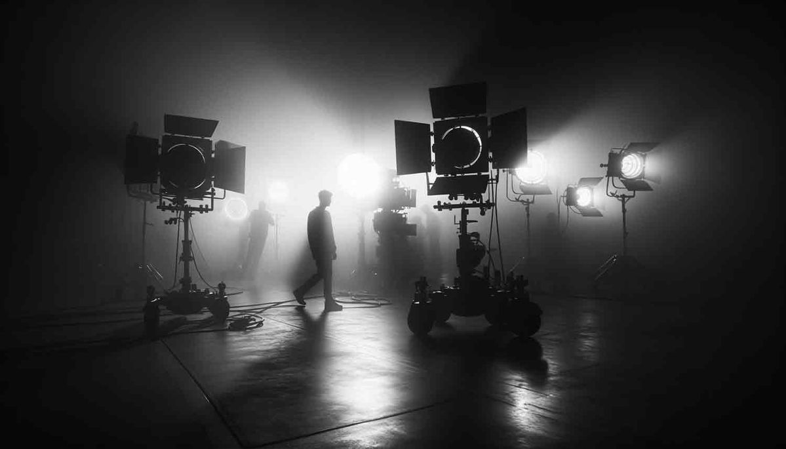
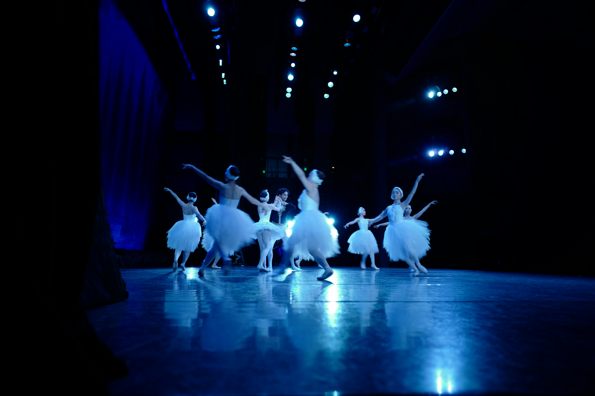

SERVICE 01
品牌影像
品牌 TVC | 广告 | 宣传片 | 专题片 | 全案叙事策略
以品牌战略与传播目标为起点，完成创意概念、脚本策划、视觉风格、拍摄制作与后期交付，帮助品牌在复杂媒介环境中建立清晰、有记忆点的影像表达。
查看相关案例 →箴行致远
SERVICE 01
品牌 TVC | 广告 | 宣传片 | 专题片 | 全案叙事策略
以品牌战略与传播目标为起点，完成创意概念、脚本策划、视觉风格、拍摄制作与后期交付，帮助品牌在复杂媒介环境中建立清晰、有记忆点的影像表达。
查看相关案例 →
SERVICE 02
品牌标识 | 物料设计 | 平面摄影 | 照片直播 | 写真
围绕品牌识别和传播场景，建立统一的视觉语言。从静态摄影、版式系统到活动物料与社交媒体图像，让视觉资产在不同触点中保持克制、准确与高级。
查看相关案例 →

SERVICE 03
活动视频 | 快剪 | 短视频 | 直播全流程制作
面向高频内容分发与活动现场传播，提供从前期策划、现场拍摄、快速剪辑到多平台适配的短视频制作服务，让即时内容也具备稳定的审美和叙事完成度。
查看相关案例 →

SERVICE 04
剧场影像 | 电影开发 | 制片 | 全流程创作
延展至剧场记录、电影短片、影视 IP 孵化与制片执行，以更长线的创作方法参与内容开发，在艺术表达与制作落地之间建立可持续的协作链路。
查看相关案例 →